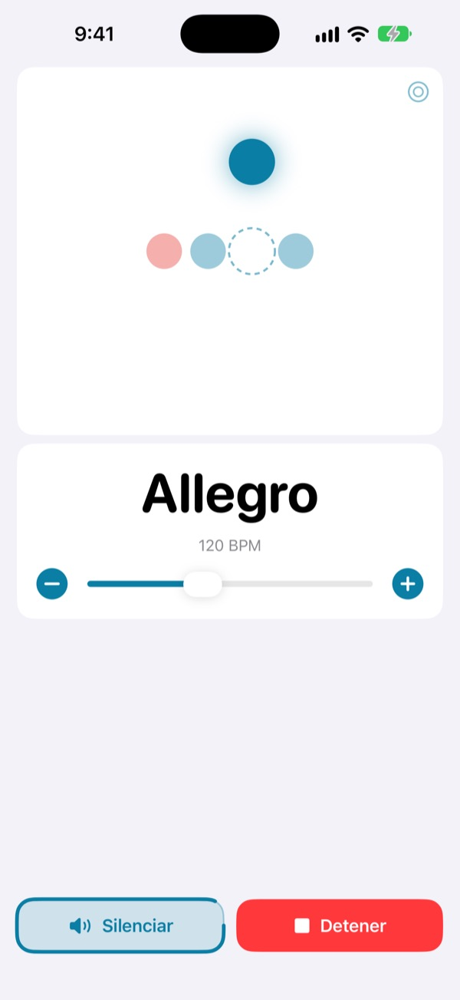
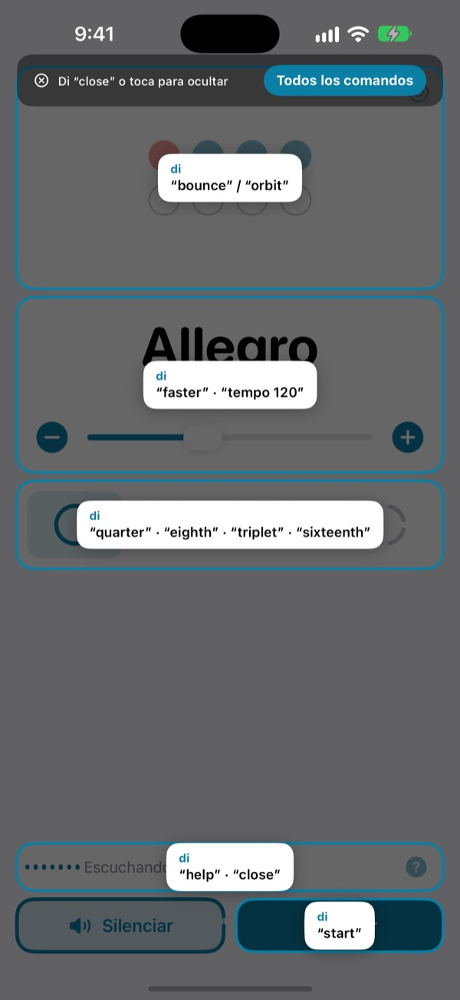
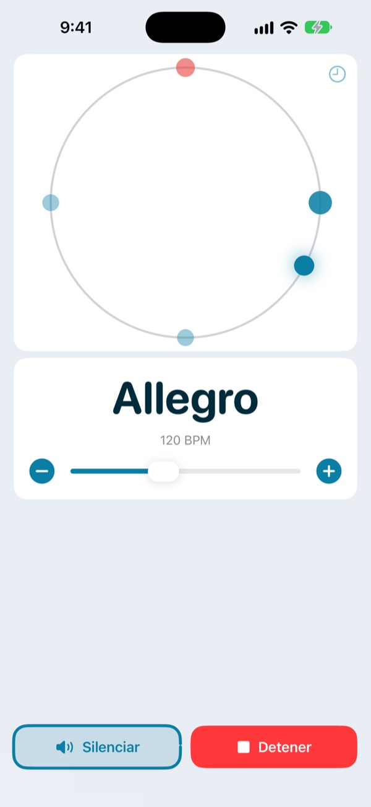
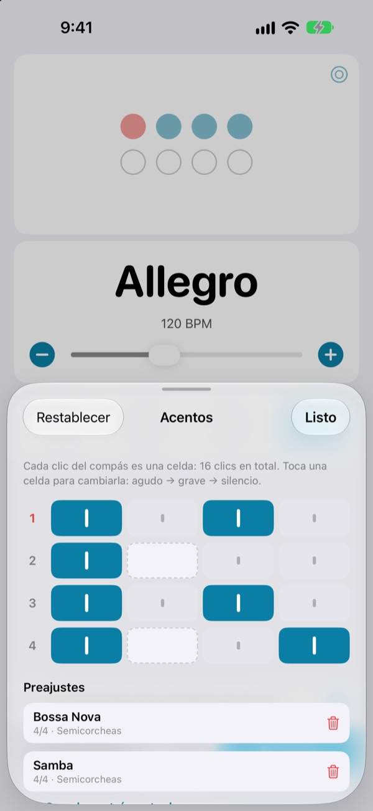

Las manos en el instrumento,
el tempo con la voz
Di faster en mitad de la frase y el clic acelera. Los comandos son palabras cortas en inglés, y no tienes que parar para cambiar el tempo.
El metrónomo completo y el control por voz son gratis.

Pruébalo en voz alta
Toca una frase o activa el micrófono y dila en inglés. Sube el volumen, que suena el clic.
¿Alguna vez has perdido el groove solo por tocar el tempo?
Dejas el arco, te pones la púa entre los dientes, tocas la pantalla dos veces y lo que acababas de pillar ya se ha ido. Not My Tempo cambia el tempo con una sola palabra, sin moverte de donde estás.
Lo dices y te sigue
Palabras cortas en inglés como start, faster o tempo 120. Escucha en cuanto abres la app, sin activar Control por voz de iOS ni ningún ajuste de accesibilidad.
¿Se te olvida un comando? Di help y verás en pantalla todo lo que puedes decir.

El pulso también se ve
Elige entre rebote, órbita o anillo. El primer tiempo del compás sale en rojo y suena más fuerte.
Si pulsas al ritmo en la órbita, te enseña lo cerca que has caído.

Los acentos de cada canción, guardados
Pon cada clic del compás en agudo, grave o silencio y guárdalo como preajuste. Montas el patrón de bossa nova o de samba una vez y la próxima solo tienes que elegirlo. (Pro)

Empieza en tres pasos
- 1
Abre la app
Empieza a escuchar al momento.
- 2
Permite el micrófono
Solo la primera vez pide acceso al micrófono y al reconocimiento de voz.
- 3
Habla o toca
Todos los comandos tienen también su botón en pantalla.
Lo que puedes decir
- start · stop
- reproducir, pausar
- faster · slower
- subir o bajar 5 BPM
- up · down
- subir o bajar 1 BPM
- tempo 120
- ir directo a un tempo
- double · half
- el doble, la mitad
- three beats
- cambiar el compás
- quarter · eighth · triplet · sixteenth
- negras, corcheas, tresillos, semicorcheas
- louder · quieter · mute
- clic más fuerte, más suave o en silencio
- volume 60
- fijar el volumen en porcentaje
- bounce · orbit
- cambiar la vista del pulso
- timer 5 minutes
- poner un temporizador de práctica
- practice
- subir el tempo poco a poco mientras practicas (Pro)
- tune
- abrir el afinador (Pro)
- help
- ver todos los comandos
- close · done
- cerrar un panel
El reconocimiento de voz funciona en inglés (Estados Unidos), así que los comandos se dicen en inglés. El resto de la app está en español y todo se puede hacer también tocando.
El metrónomo es gratis. Pro, cuando quieras más.
Gratis
- Todos los comandos de voz
- Compases de 1 a 8 tiempos, con el primero acentuado
- Subdivisiones en negras, corcheas, tresillos y semicorcheas
- Vistas de rebote, órbita y anillo
- Tempo por toques y prueba de precisión
- Temporizador de práctica
Not My Tempo Pro
- Modo práctica: suma unos BPM cada pocos compases hasta llegar a tu objetivo
- Editor de acentos con preajustes por canción
- Afinador cromático
Suscripción anual con prueba gratuita, o compra única de por vida
El control por voz y las funciones de accesibilidad seguirán siendo gratis para todos. ¿Compraste la app antes de que existiera Pro? Ya tienes todas las funciones Pro.
Preguntas frecuentes
¿Puedo hablarle en español?
El reconocimiento de voz funciona en inglés (Estados Unidos), así que los comandos son palabras cortas en inglés como start o faster. Se aprenden enseguida, y todos tienen también su botón en pantalla.
No me oye.
Comprueba que el estado del micrófono diga Escuchando. Si está apagado, toca Escuchar. En sitios ruidosos o con altavoces a todo volumen, usa auriculares para que el clic no se cuele en el micrófono.
La escucha se ha apagado sola.
Para ahorrar batería, la escucha se apaga tras unos minutos sin comandos. Toca Escuchar para volver a activarla.
El tempo sale al doble o a la mitad.
Di double o half y queda corregido.
¿Cómo se usa el afinador?
Di tune o toca el botón de la onda en la tarjeta del tempo. Toca una nota: cuando el indicador cae en la zona verde, estás afinado. Di close para salir.
Ya uso Control por voz de iOS.
Apaga el micrófono propio de la app y manéjala por el nombre de cada botón. Todos los controles tienen etiqueta de VoiceOver.
¿Se envía mi voz a algún sitio?
No. La voz se reconoce en el propio dispositivo y nunca se graba, se guarda ni se envía. El metrónomo, el control por voz y el afinador funcionan sin conexión.
¿Cómo cancelo la suscripción?
En Ajustes > Cuenta de Apple > Suscripciones. El plan anual se renueva automáticamente salvo que lo canceles al menos 24 horas antes de que termine el periodo. La opción de por vida es un único pago.
¿Dudas o comentarios? Escríbenos a leeo@kakao.com.